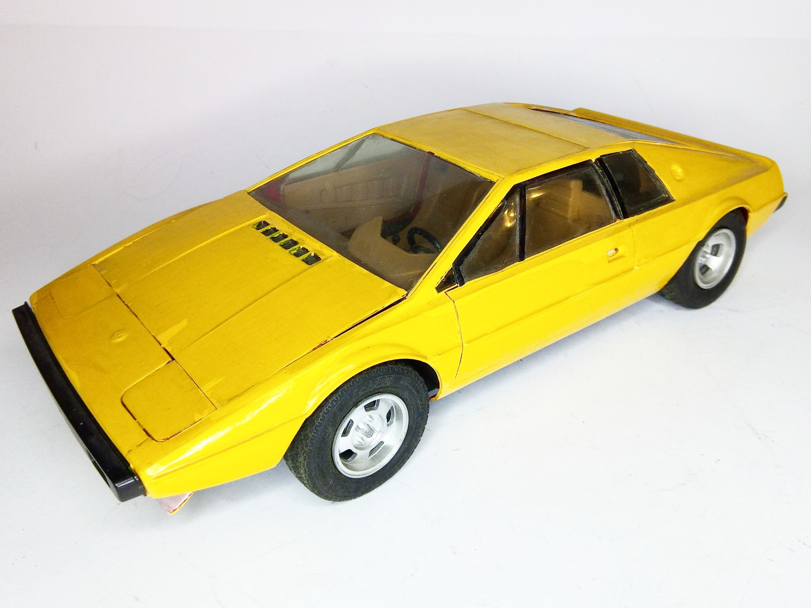
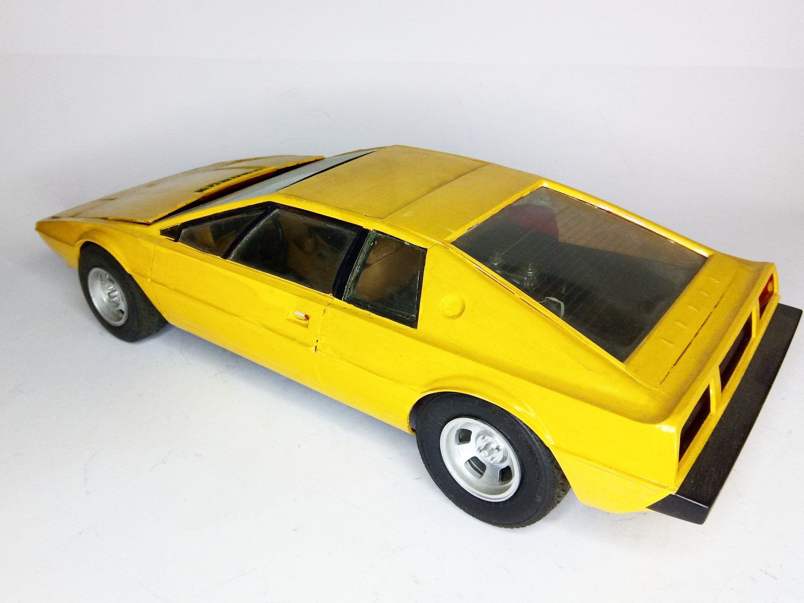

Auto e veicoli stradali · scale model archive
Lotus Esprit
Lotus Esprit — Kit: Bandai, Scale: 1/16. Beautiful iconic car. Unusual scale, unfortunately incomplete, #1/16 #Bandai #Lotus #Esprit

Photo gallery

English description
Beautiful iconic car. Unusual scale, unfortunately incomplete,
#1/16 #Bandai #Lotus #Esprit
Descrizione italiana
Bellissima auto iconica. Scala insolita; purtroppo incompleta.